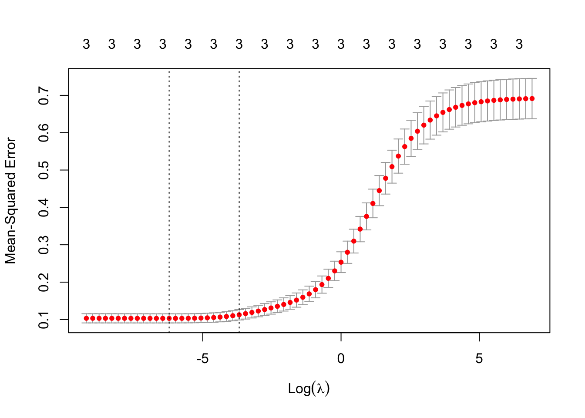

2.3 Shrinkage methods
Another approach to fitting linear models is to regularise the parameters. Instead of minimizing \(||\mathbf y- \mathbf X\boldsymbol \beta||^2_2\), we instead minimize
\[||\mathbf y- \mathbf X\boldsymbol \beta||^2_2+\lambda||\boldsymbol \beta||\] where we have added a penalty term \(\lambda||\boldsymbol \beta||\) to constrain the size of the parameter (\(\lambda\geq 0\)). This stops estimated values of \(\boldsymbol \beta\) becoming too large. Larger values of \(\lambda\) penalise the size of \(\boldsymbol \beta\) more strongly, and so have a bigger effect. As \(\lambda \rightarrow \infty\) we find the optimal \(\boldsymbol \beta\) tends to \(\boldsymbol 0\).
Ridge regression is the name given to the estimate found when we use the \(||\cdot||_2\) norm. \[\hat{\boldsymbol \beta}^{ridge} = \arg \min_{\boldsymbol \beta} \left\{||\mathbf y- \mathbf X\boldsymbol \beta||^2_2+\lambda||\boldsymbol \beta||_2^2 \right\}.\] You’ll show on the example sheets that
\[\hat{\boldsymbol \beta}^{ridge} = (\mathbf X^\top \mathbf X+ \lambda\mathbf I)^{-1}\mathbf X^\top \mathbf y\]
We can also show that the ridge regression estimator is small than the OLS estimator \[||\hat{\boldsymbol \beta}^{ols}||_2 \geq ||\hat{\boldsymbol \beta}^{ridge}||_2\] We say that ridge regression shrinks the parameter estimates towards zero. The motivation for this is that when there are many correlated covariates, we sometimes find that the coefficients are poorly determined, and so the OLS estimator can have high variance. As Hastie et al. put it
“A wildly large positive coefficient on one variable can be cancelled by a large negative coefficient on its correlated cousin. By imposing a size constraint on the coefficients […] this phenomenon is prevented from occurring.”
The fitted values are again \(\hat{\mathbf y}^{ridge} = \mathbf X\hat{\boldsymbol \beta}^{ridge}\). If we substitute the SVD for \(\mathbf X\) we find
\[\begin{align*} \hat{\mathbf y}^{ridge}&=\mathbf X\hat{\boldsymbol \beta}^{ridge}\\ &=\mathbf X(\mathbf X^\top \mathbf X+ \lambda\mathbf I)^{-1}\mathbf X^\top \mathbf y\\ &=\mathbf U\boldsymbol{\Sigma}\mathbf V^\top(\mathbf V\boldsymbol{\Sigma}^2 \mathbf V^\top +\lambda\mathbf I)^{-1}\mathbf V\boldsymbol{\Sigma}\mathbf U^\top \mathbf y\\ &=\mathbf U\boldsymbol{\Sigma}\mathbf V^\top(\mathbf V(\boldsymbol{\Sigma}^2 +\lambda\mathbf I)\mathbf V^\top)^{-1}\mathbf V\boldsymbol{\Sigma}\mathbf U^\top \mathbf y\\ &=\mathbf U\boldsymbol{\Sigma}(\boldsymbol{\Sigma}^2 +\lambda\mathbf I)^{-1}\boldsymbol{\Sigma}\mathbf U^\top \mathbf y\\ &= \sum_{i=1}^p \frac{\sigma^2_i}{\sigma^2_i+\lambda} \mathbf u_i \mathbf u_i^\top \mathbf y \end{align*}\] The penultimate line has assumed \(\mathbf V\) is full rank here, but the argument can be made to work regardless. Since \(\lambda\geq 0\), we have that \(\frac{\sigma^2_i}{\sigma^2_i+\lambda}\leq 1\). So we can see that just like in OLS and PCR, we project the data onto the orthonormal basis \(\mathbf U\), but with ridge regression, we shrink the coefficients by the factors \(\frac{\sigma^2_i}{\sigma^2_i+\lambda}\leq 1\). A greater amount of shrinkage is applied to basis vectors with small singular values \(\sigma_i\).
If we compare the three different expressions for the fitted values \[\begin{align*} \hat{\mathbf y}^{ols}&=\sum_{i=1}^p \mathbf u_i \mathbf u_i^\top \mathbf y,\\ \hat{\mathbf y}^{ridge}&=\sum_{i=1}^k \mathbf u_i \mathbf u_i^\top \mathbf y\\ \hat{\mathbf y}^{ridge}&=\sum_{i=1}^p \frac{\sigma^2_i}{\sigma^2_i+\lambda} \mathbf u_i \mathbf u_i^\top \mathbf y \end{align*}\] we can see that PCR just works in a lower dimensional space discarding dimensions with small singular values, whereas ridge regression retains all coordinates, but reduces the importance of the coordinates with small singular values.
In ridge regression we used the \(||\cdot||_2\) norm to penalise the parameter size. Other methods use other norms, which can induce interesting effects. Of particular interest is the lasso, which uses the \(L_1\) norm as a penalty \(||\boldsymbol \beta||_1\). This induces sparsity in the solution, but is beyond the scope of the module. If you are interested, take a look at the wikipedia page
2.3.1 Ridge regression in R
We’ll use the glmnet package to do ridge regression. The glmnet command solves the optimization problem
\[\arg \min_{\boldsymbol \beta} \left\{||\mathbf y- \mathbf X\boldsymbol \beta||^2_2+\lambda \left((1-\alpha)||\boldsymbol \beta||_2^2+\alpha ||\boldsymbol \beta||_1^2\right)\right\}\]
where we must specify the value of \(\alpha\).
Taking \(\alpha=0\) gives us ridge regression, and \(\alpha=1\) gives the lasso. Values of \(\alpha \in (0,1)\) balance both the \(L_1\) and \(L_2\) penalties (a method known as the elastic-net).
We can choose to specify what values of \(\lambda\) to use (if we don’t specify this, the glmnet package will pick some sensible values). Remember that larger values of \(\lambda\) result in a bigger penalty, and greater shrinkage of the parameters.
library(glmnet)
X = as.matrix(iris[,2:4]) # glmnet doesn't work with data frames
y=iris[,1]
lambdas <- 10^seq(3, -4, by = -.1)
iris.ridge <- glmnet(X,y, alpha=0, lambda = lambdas)We can then look at how the parameter estimates change as the size of \(\lambda\) changes.

We can see that as \(\lambda\) grows large, the parameters all shrink to \(0\) as expected. For \(\lambda\approx 0\), we get the OLS estimates of the parameters
## (Intercept) XSepal.Width XPetal.Length XPetal.Width
## 1.8559975 0.6508372 0.7091320 -0.5564827We usually choose \(\lambda\) by finding which value gives the lower prediction error (using some form of predictive test, such as cross-validation).

From this, we can see that very small values of \(\lambda\) work best here, i.e., the OLS estimator is optimal. This is not a surprise as there are only three covariates in this problem. It is in larger problems that we expect shrinkage methods to be most useful.
The value of lambda that minimizes the prediction error can be found by
## [1] 0.001and the largest value of lambda that gives a prediction error within one standard deviation of the minimum can be found using:
## [1] 0.01995262